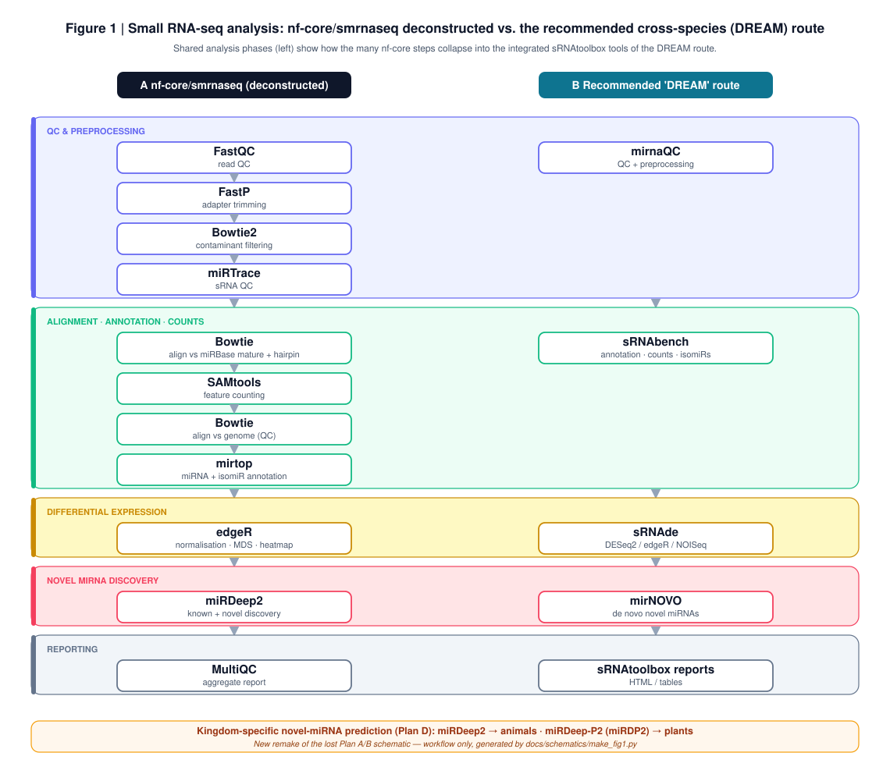

A FAIR, cross‑species small RNA‑seq (miRNA) analysis framework — benchmarking four pipelines for NASA OSDR spaceflight data, across plants and animals.
Small RNA-seq analysis was scattered across five overlapping repositories — the same workflow (QC → align/annotate → count → differential expression → target prediction) implemented in four different tool "dialects." smallRNAseq-DREAM consolidates them into a single, maintained pipeline framework, preserving every method learned while cutting the clutter.
The original repositories are either merged here, archived with a redirect notice, or — for large reference/test data — preserved in a citable Zenodo deposit rather than bloating git.
One workflow, four interchangeable engines, split by kingdom:
| Engine | Kingdom | Role |
|---|---|---|
| nf‑core/smrnaseq | Both | Community best-practice pipeline (deconstructed as the baseline) |
| sRNAtoolbox (sRNAbench · sRNAde · mirNOVO) | Both | Annotation · counts · differential expression · de-novo discovery |
| miRDeep2 | Animal | Known + novel miRNA discovery |
| miRDeep‑P2 | Plant | Plant-specific prediction + DESeq2 (fork; TF-Chan-Lab attribution retained) |

After deconstructing nf-core/smrnaseq and testing the alternatives, the route found best for cross-species analysis is:
SRA → mirnaQC → sRNAbench → sRNAde → mirNOVO
Command-line, containerisable (Singularity), and deployable on SLURM/OSDR infrastructure for high throughput. The kingdom-specific miRDeep2 / miRDeep-P2 arms remain the comparators for prediction accuracy.
Real SRA runs have no absolute truth, so precision/recall are impossible from them alone. The framework ships a synthetic-data harness that simulates reads from known miRBase miRNAs at defined abundances and holds a subset out of the reference — those held-out miRNAs are the ground truth for de-novo detection.
The generator + scorer are tested end-to-end on mock data. The last step before publishable numbers is running all four engines on the synthetic set — the harness makes that a one-command scoring pass.
No accuracy numbers are claimed until that run is done.
The framework pulls data straight from the NASA Open Science Data Repository (OSDR) public API
(osdr/osdr_fetch.py). Surveying OSDR for small RNA-seq surfaced a clear result:
This positions the framework two ways: validate now on real animal OSDR small RNA-seq, and stand ready to fill the plant gap the moment plant spaceflight small RNA-seq is deposited (VEGGIE/APH-type missions, or new datasets).
A verified spaceflight/radiation miRNA cohort — OSD-334/335/336/337 (mouse, HZE radiation)
and OSD-483 (astronaut sEV) — is pulled, processed, and merged into one count matrix.
Homologous miRNAs pool across species by family (mmu-miR-21 + hsa-miR-21 →
miR-21).
No plant small RNA-seq exists, so the plant route recovers MIR-locus / precursor signal from standard Arabidopsis RNA-seq (plant pri-miRNAs are polyadenylated). A read-length diagnostic shows empirically whether any mature ~21 nt reads survived the prep — mature vs precursor are kept as distinct measurement layers, never pooled naively.
Batch correction and layer stratification are the analyst's job — the scaffold flags both rather than hiding them.
The four engines are the same pipeline expressed differently; consolidating them made the real design choices explicit.
Figure 1's phase grouping shows the DREAM route collapses many nf-core steps into single integrated tools — simpler to deploy and reproduce.
Plant and animal miRNA biogenesis differ enough that prediction needs kingdom-specific engines (miRDeep-P2 vs miRDeep2), not one-size-fits-all.
Large reference/test data belongs in a citable Zenodo deposit, not in git — keeping the code repo lean and the data reusable.
Quantitative benchmark findings will be added once the engine runs are complete (§04).
osdr/osdr_fetch.py + end-to-end demo workingmeta-analysis/ combined count matrix wiredsmallrna_from_rnaseq/ precursor quantification wired